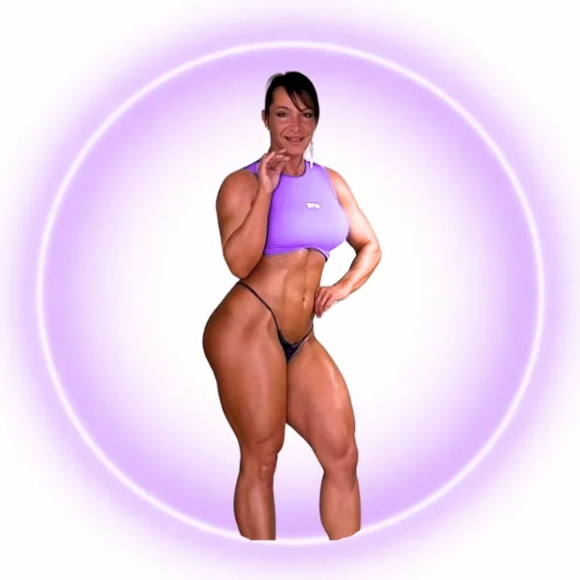
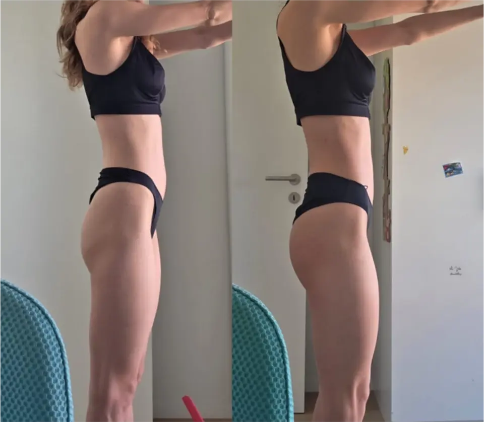
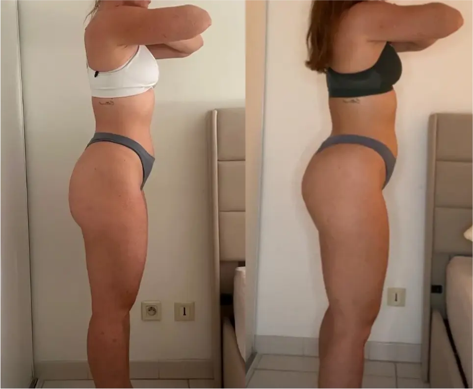
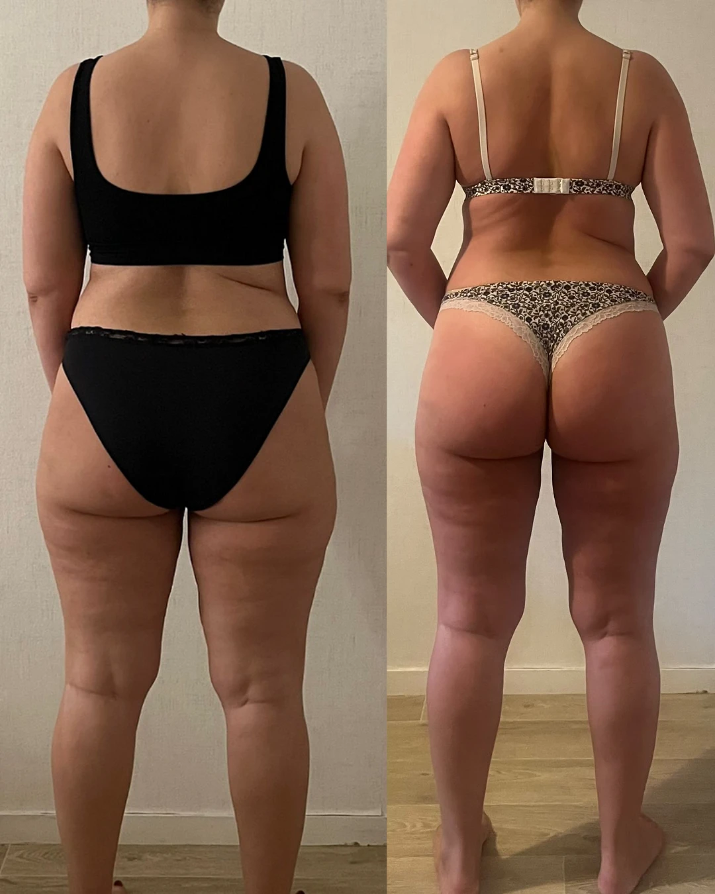
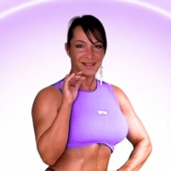

La séance qui fait enfin pousser tes fessiers
Tu t'entraînes, tu transpires… et dans le miroir, rien ne bouge ? Voici les bases d'une séance fessiers bien construite. Pour de vrais résultats, il faudra ensuite l'intensifier et l'adapter à ton corps : c'est exactement ce que je fais avec mes clientes en coaching.

& juge de compétition
- 🏆 Compétitrice Wellness
- ⚖️ Juge de compétition
- 📅 11 ans de pratique en musculation
Tu t'entraînes… mais tes fessiers ne suivent pas ?
Ce n'est ni ta génétique, ni un manque de motivation. En 11 ans de pratique en musculation, je retrouve presque toujours les mêmes blocages. Coche ceux qui te ressemblent :
Les 4 règles qui font vraiment grossir un fessier
Ta séance ne marchera que si tu respectes ces 4 règles. Lis-les une fois, elles changent tout.
Surcharge progressive
Chaque semaine, une répétition ou un peu de charge en plus. C'est le signal n°1 pour construire du muscle.
Proche de l'échec
Termine chaque série à 1 ou 2 répétitions de l'échec (RIR 1-2). Si tu pourrais en faire 5 de plus, ça ne compte pas.
Amplitude complète
Le fessier grossit surtout quand il travaille en étirement. Descends bas, contrôle la descente, ne triche pas l'amplitude.
Régularité
2 séances fessiers par semaine, 8 semaines minimum sur le même programme. Le muscle se construit dans la durée.
En compétition Wellness, ce qu'on juge, ce n'est pas un fessier « gros » : c'est un fessier haut, rond et bien attaché à l'ischio, avec un galbe visible sur le côté (le moyen fessier). Cette séance travaille ces 3 zones : grand fessier, moyen fessier et jonction fessier-ischios.
Séance Booty Flow
Coche tes séries au fur et à mesure, note tes charges (elles restent enregistrées sur ton téléphone) et lance le minuteur de repos d'un clic.
Échauffement
⏱ 8 min- Vélo ou marche inclinée5 min
- Abduction à l'élastique, assise2 × 20
- Pont fessier au sol, pause 2 s en haut2 × 15
- Hip thrust à vide (barre seule)1 × 12
Séance principale
⏱ ~50 minséries validées. Chaque série cochée te rapproche de tes fessiers de rêve.
Séance terminée ! Note tes charges : la semaine prochaine, ton seul objectif est de les battre.
Tu veux un programme complet, ajusté à ton corps et suivi chaque semaine ?
Comment progresser avec cette séance
Fais-la 2 fois par semaine (ex. lundi et jeudi), avec au moins 48 h entre les deux. Utilise la double progression :
| Semaine | Ton objectif |
|---|---|
| S1 | Trouve tes charges : finis chaque série à 2 répétitions de l'échec, dans le bas de la fourchette. |
| S2 | Même charge, ajoute 1 à 2 répétitions par série. |
| S3 | Tu atteins le haut de la fourchette ? Ajoute 2 à 5 % de charge et repars du bas. |
| S4 | Continue. Si la fatigue s'accumule, enlève 1 série par exercice cette semaine (décharge). |
La séance seule ne suffit pas. Pour que le muscle se construise, vise 1,6 à 2 g de protéines par kilo de poids de corps, dors 7 h minimum et marche 7 000 à 10 000 pas par jour. C'est exactement ce qu'on ajuste ensemble en coaching.
Des fessiers qui changent, pour de vrai
Ces femmes s'entraînaient déjà. Ce qui a changé : un programme ciblé, une progression suivie et des ajustements chaque semaine.




Moi c'est Marie
J'ai construit mes fessiers pour monter sur scène, et aujourd'hui je juge celles des autres. Je sais exactement ce qui fait un bas du corps développé et harmonieux.
- 11 ans de pratique en musculation
- Athlète Wellness, la catégorie où le bas du corps est roi
- Juge de compétition : je vois en un coup d'œil ce qui manque à un physique
Cette séance, c'est une pièce du puzzle
En coaching, je construis ton programme selon ta morphologie, ton niveau et ton matériel, et je l'ajuste chaque semaine selon tes résultats.
- ✓Programme 100 % personnalisé : fessiers en priorité, corps harmonieux
- ✓Plan alimentaire adapté pour construire du muscle sans prendre de gras
- ✓Bilan chaque semaine : photos, mensurations, charges, ajustements
- ✓Correction de ta technique en vidéo, avec mon œil de juge
- ✓App Booty Flow + messagerie directe avec moi
Appel de 20 min, sans engagement. Places limitées chaque mois pour garantir un vrai suivi.
Questions fréquentes
Je suis débutante, je peux faire cette séance ?
Oui. Commence avec des charges légères, 2 séries par exercice au lieu de 3 ou 4, et concentre-toi sur la technique pendant 2 semaines. Le hip thrust peut se faire avec un haltère au début.
Je n'ai pas de machine d'abduction, je fais comment ?
Remplace l'abduction machine par une abduction à l'élastique (assise, buste penché), Pour le kickback, il te faut juste un banc inclinable et un lest à la cheville (ou un élastique).
Je sens mes cuisses et pas mes fessiers, c'est normal ?
C'est le problème n°1. Sur le hip thrust : tibias verticaux en haut, menton rentré, bascule du bassin. Sur la fente bulgare : buste penché, pied avant un peu plus loin. Si ça persiste, filme-toi : en coaching, je corrige ta technique en vidéo.
En combien de temps je verrai des résultats ?
Avec une vraie surcharge progressive, une alimentation adaptée et de la régularité, les premiers changements se voient souvent entre 4 et 8 semaines. Une transformation marquée demande plutôt 3 à 6 mois.
Je fais aussi des jambes / du haut du corps ?
Oui ! Cette séance complète une semaine d'entraînement. Un exemple simple : fessiers lundi, haut du corps mardi, repos mercredi, fessiers-ischios jeudi, haut du corps vendredi.